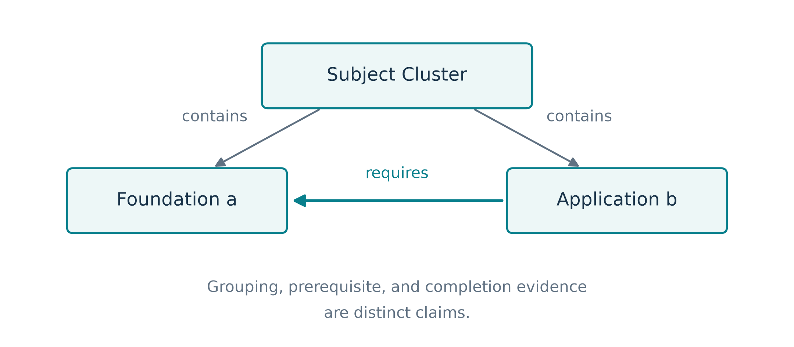
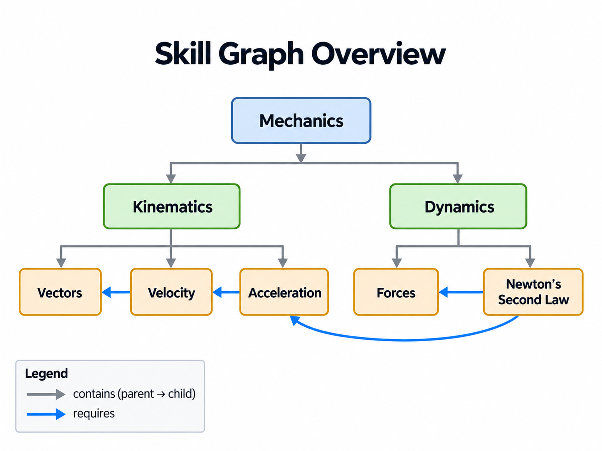
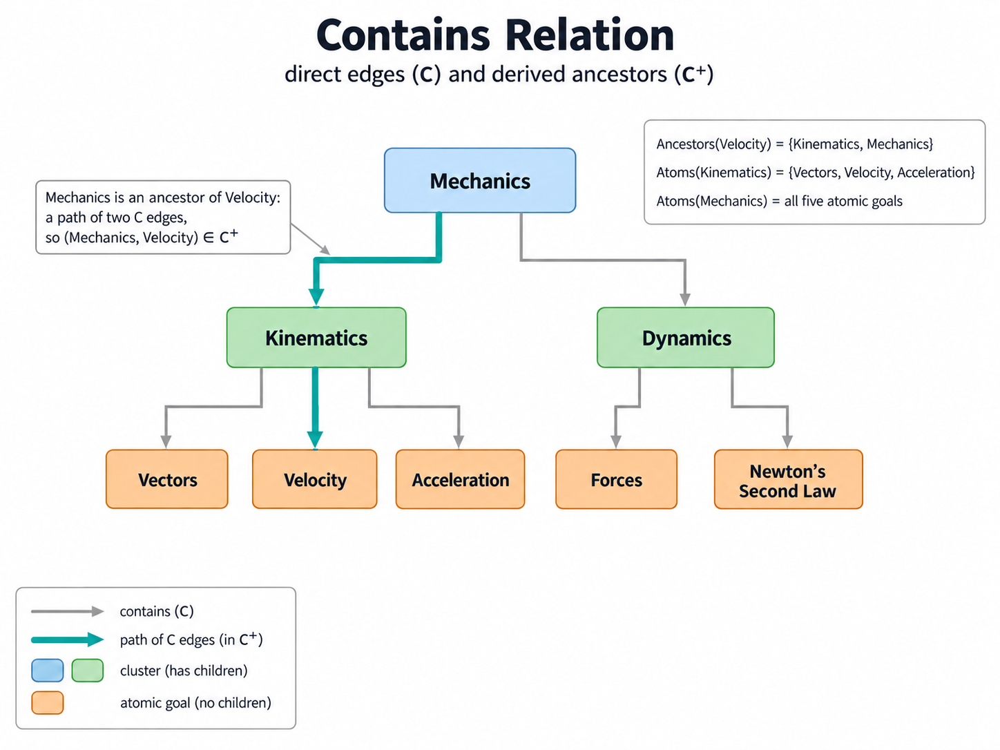
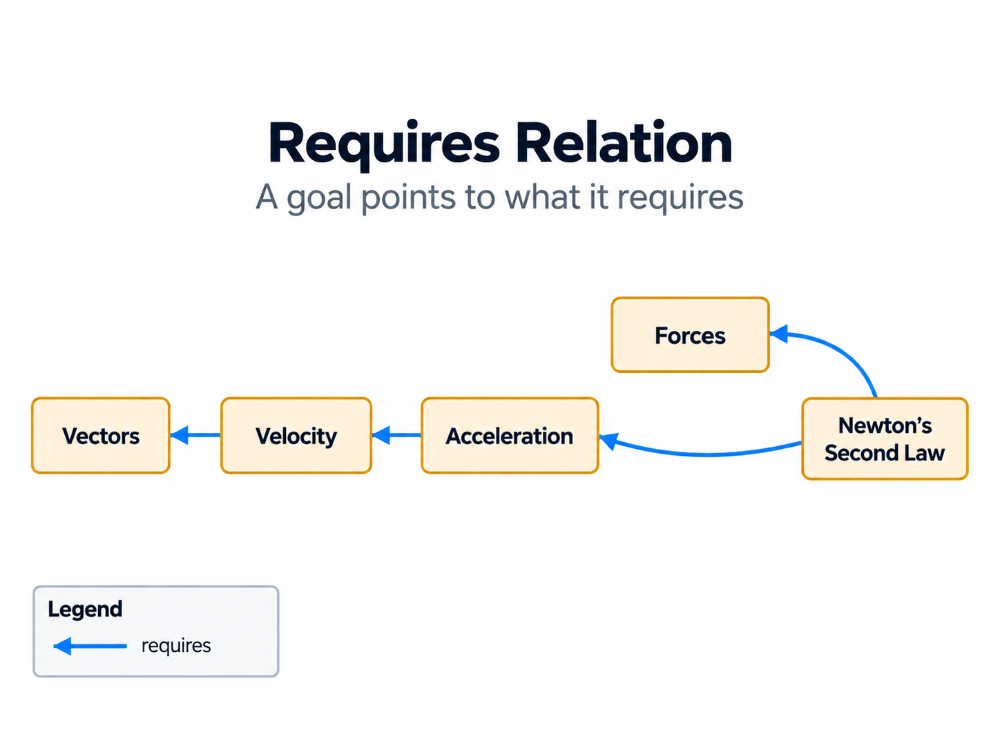
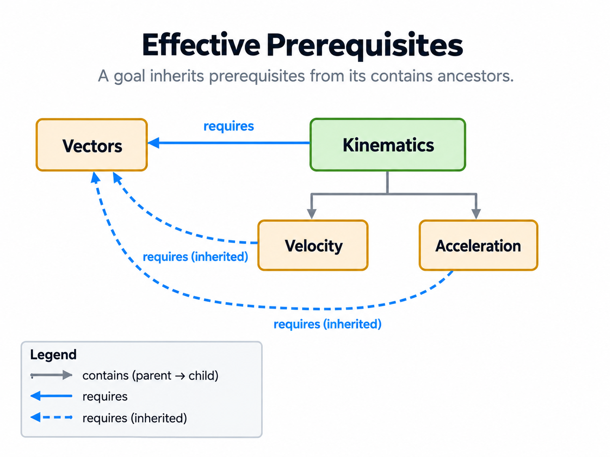
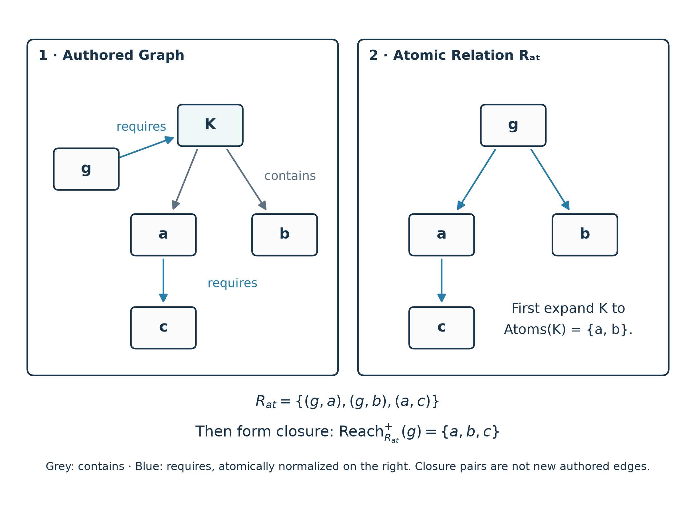
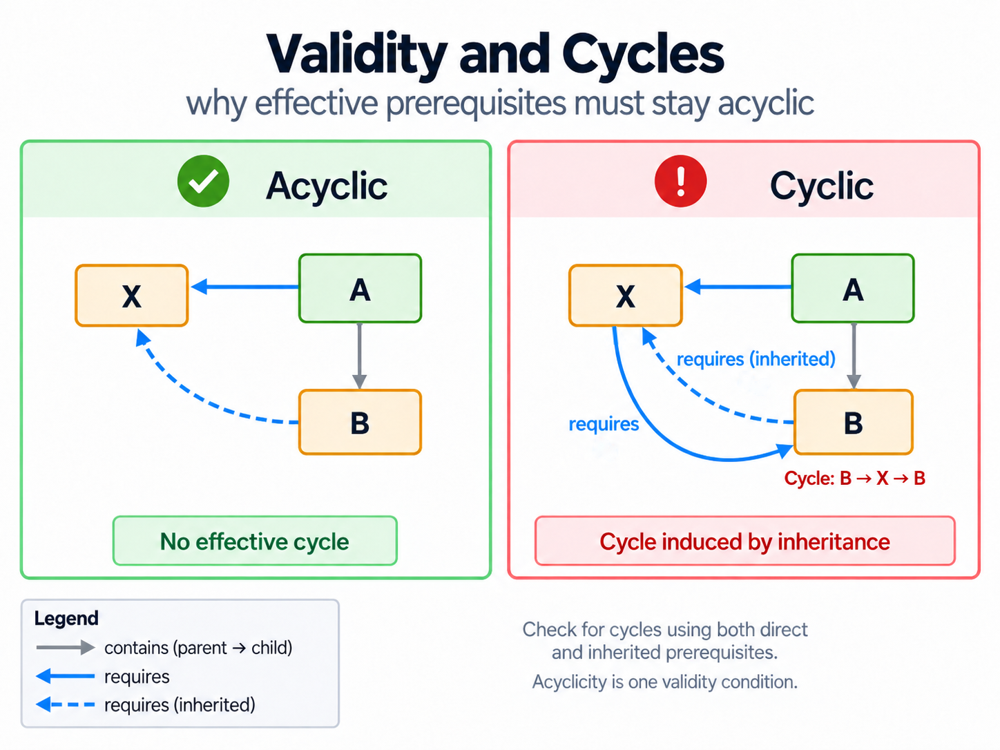
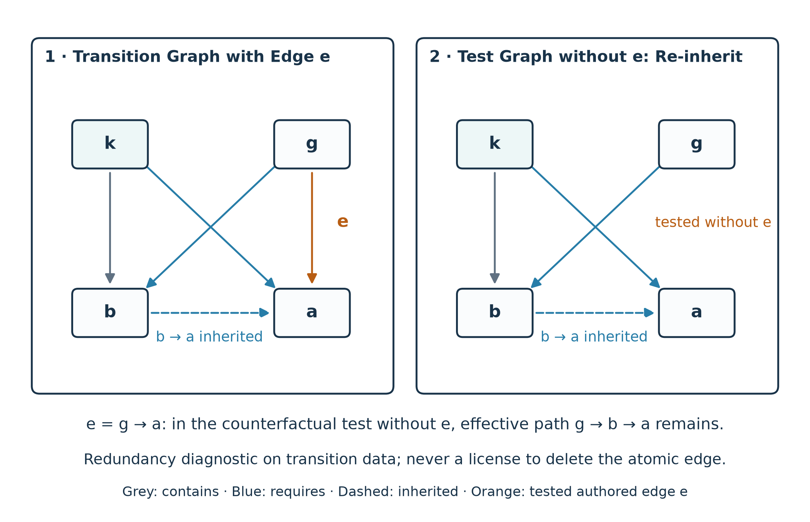
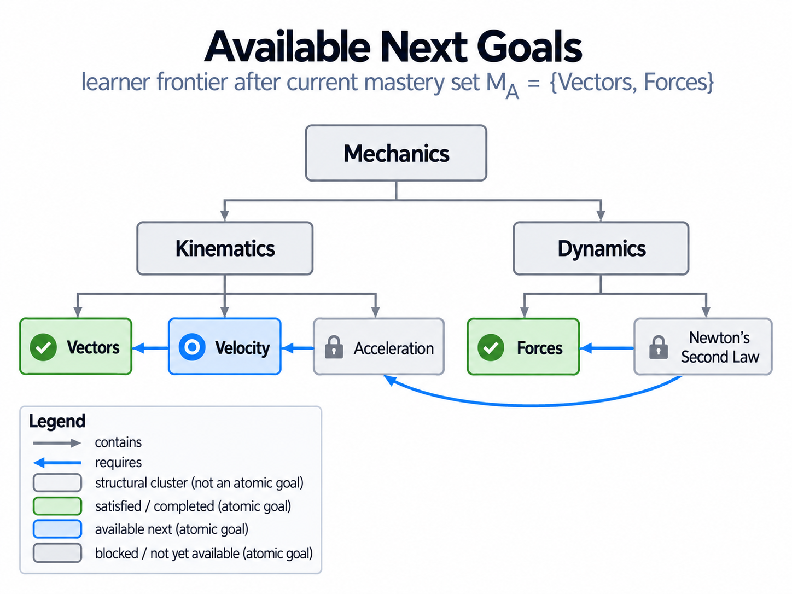
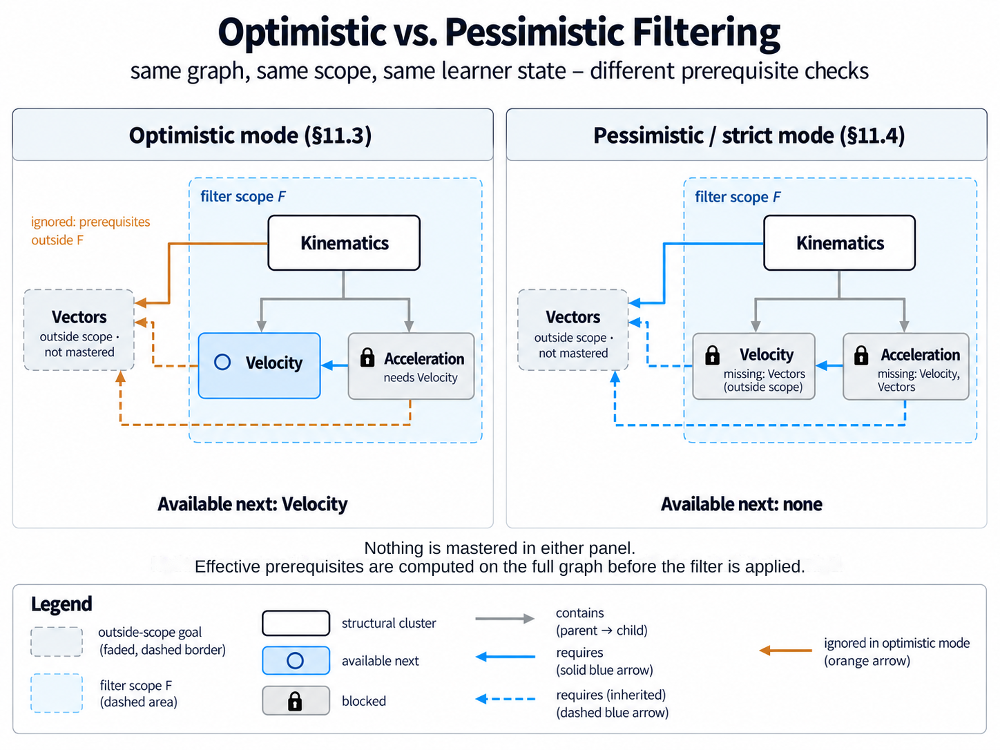

SkillPilot Graph Definition — Formal Core (§§1–5)
Generated artifact. Do not edit manually.
Generated by:
docs/concept/skill-graph/build_spec.pyRegenerate with:cd app && npm run docs:skill-graph:webSource of truth:docs/concept/skill-graph/source/
Language / Sprache: English (EN) · Deutsch (DE) | PDF: English PDF · Deutsches PDF
Compendium: §§1–5 Core · §§6–10 Context · §§11.1–11.4 Units · §11.5 Progression · §12 Planning · §13 Implicit Mastery · Appendices B–F · Appendix A (Rules & Ampel)

Scope and Status of This Edition
Complete English reference, as of 11 November 2026. SkillPilot models learning goals and their relationships: contains groups goals into a hierarchy, while requires identifies subject-matter prerequisites. Canonical goal identities are preserved across the canonical inventory, the Personal Curriculum, the active focus, and stored learner outcomes. Learning units (Lerneinheiten) bind a learning promise to directly owned goals and child units; optional schedules allocate their acquisition to available calendar periods and workload budgets. Explicitly verified understanding and independent application demonstrated through valid local assessments both count toward the effective mastered set.
Normative force and implementation. Atomic normal form \(R\subseteq A\times A\) and its complete deterministic validation on the current inventory before any milestone pass are binding. The Product Owner decision of 12 November 2026 replaces the earlier migration-order and preservation obligations with this target-state check. Appendix A maps every rule to its validation area, makes actual hard enforcement visible via traffic-light (Ampel) status, and delineates existing CI gates. Global application recognition is not yet implemented on audited main; Appendix B documents how current runtime behavior differs. Completion of a learning unit is derived from its own obligations and required child units without persisting an additional mastery tier.
Reader's Guide and Scope
A SkillPilot skill graph describes what can be learned and which prerequisites govern it. Four further claims build on that foundation while remaining deliberately separate in the model:
- Curricular views determine which of these stable goals apply to a learner and where they sit within an educational program.
- Learner state records for each atomic goal whether it has been achieved.
- Learning units explain subject-matter coherence from a manageable topic up to a broader domain. Their completion is derived recursively from child units and directly owned obligations rather than persisted as a flat flag.
- Planning distributes acquisition and practice across available time.
Deriving implicit mastery connects explicit outcomes, transitive prerequisites, and subject-reviewed local contracts of learning units. All of these claims may reference one another, but none may silently substitute for another.
This reference is intended for joint review and further development of the model. It covers the graph definition in the broad sense: identity, edges, inheritance, validity, availability, projection, goal types, progress, scheduling, completion, provenance, and quality assurance. Complete syllabus texts and concrete task banks are not reproduced here. Worked examples serve as illustrations rather than approved curriculum subgraphs.
The Model in Seven Steps
These seven steps preview the reasoning of the document. Concrete English goal names come from the Mechanics example in the original illustrations, starting in Figure 1.
- Goals and two relation kinds. Every learning goal carries a stable identity.
containsgroups goals: Kinematics contains Velocity.requiresstates subject prerequisites: Velocity requires Vectors. Grouping alone never establishes a prerequisite (Sections 1 and 2). - Atoms and clusters. Goals without children are atomic; learner outcomes are stored only on them. Clusters group goals. In the canonical target state, every authored requirement connects an atom to an atom, and none is redundant. Legacy requirements on or toward clusters remain readable as transition data (Sections 2 and 3).
- Learner state and frontier. Each atomic goal has exactly one stored binary result. An open atom becomes available next – in the frontier – only once all atoms it requires directly or across prerequisite chains are mastered (Section 4).
- Scoped views. The Personal Curriculum fixes a learner's longer-term scope, while focus selects a temporary working subset. Derivations always run on the full graph first and restrict afterwards. Normal (optimistic) mode checks prerequisites inside the scope; strict mode checks all prerequisites globally (Sections 5 to 7).
- Goal types. A goal's pedagogical type defines what counts as achieving it: verified understanding for a content goal, completed motivational entry for an orientation goal, verified recall for a memory goal, and a passed exam for an assessment goal (Section 8).
- Learning units. A learning unit binds a coherent learning promise to its own goals and required child units. Its completion is derived from those obligations rather than stored separately (Section 11).
- Implicit mastery. Once no open assessment and no open memory goal of a learning unit still depends on one of its own content goals, that content goal counts as independently applied – provided the unit's local contract has passed subject review and is valid. Explicitly verified understanding and application demonstrated in this way together form the effective mastered set; both satisfy later prerequisites and count toward progress (Section 13).
Structure, Status, and Rule Identifiers
Each part answers a guiding question and carries its own status. The final column lists the prefix under which Appendix A tracks that part's rules, such as GD-C07 for a formal-core rule.
| Sections | Guiding question | Status | Rules |
|---|---|---|---|
| 1–5: Formal Core | What can be learned, what does it require, and what is available next – across the full graph and inside a scoped view? | Normative core | GD-C |
| 6–10: Context, Views, Goal Types, Quality | Where does a goal sit in an educational program, what belongs to personal scope, when does a goal count as achieved, and what is its provenance? | Adjacent contract | GD-X |
| 11: Learning Units | Which goals form a coherent subject-matter whole, and when is it complete? | Domain structure | GD-U |
| 12: Acquisition and Time Planning | Can acquisition be arranged into a valid order and calendar budget? | Optional profile | GD-P |
| 13: Implicit Mastery | When does a passed assessment also substantiate the goals it builds upon? | Binding concept, not yet implemented | GD-A |
| Appendices A–F | How is each rule checked, where does the implementation diverge, and what do terms and symbols mean? | Reference | GD-D |
| Status | Meaning in this reference |
|---|---|
| Normative core | Binding mathematical graph semantics from graph-definition.md; additional validator profiles may impose stricter constraints. |
| Adjacent contract | Semantics of projection, goal types, provenance, or learning workflows; actual implementation coverage must be verified per rule. |
| Domain structure | Recursive learning units with a learning promise, directly owned goals, and derived completion; represented in the placement layer of the skill landscape and validated (Section 11.2), but not a claimed runtime feature today. |
| Optional profile | Calendar and workload budgeting plus conditional entry to learning units; hard technical locks and direct assessment entry remain undecided there. |
| Not yet implemented | The new implicit-mastery recognition contract is bindingly specified, but not yet deployed; current runtime code follows an earlier demand model (Appendix B). |
Curriculum authors primarily need Sections 1 to 3, 8, and 10. Runtime logic primarily rests on Sections 4, 5, 7, and 13; quality assurance and review additionally rely on Appendices A to C. Sections 11 and 12 address everyone who structures and schedules courses.
Reading Conventions
Normative force. “Must”, “must not”, and “binding” denote normative model rules. “Not yet implemented” means bindingly specified, but not yet realized in the runtime. “Optional” marks an additional profile; “open” or “not yet decided” marks a deliberately unresolved question.
Notation. Italic uppercase letters denote sets and relations (\(G\), \(A\), \(R\), \(M\)); italic lowercase letters denote arbitrary goals (\(g\), \(p\), \(a\)). Concrete example nodes from a figure are set upright in sans-serif to match the figure labels: in the chain \(\nd{Q}\to\nd{B}\to\nd{A}\), \(\nd{A}\) is one individual goal rather than the set \(A\) of atomic goals. Spelled-out example names such as Velocity appear in italics. Arrows always point in the direction of the relation, from cluster to child and from goal to prerequisite. Monospace denotes field and identifier names such as requires. Figures 1 to 9 preserve the original English-labelled illustrations of the core specification; their captions explain every label.
Terminology. The distinctions below are easily conflated and are therefore used throughout this document with these exact meanings. Appendix D provides the complete glossary and symbol index.
| Terms | Meaning in this specification |
|---|---|
| Requirement, prerequisite | The edge \((g,p)\in R\) is a requirement of \(g\); goal \(p\) is a prerequisite of \(g\). |
| authored, derived | Only the stored contains and requires edges are authored. Inherited, effective, and atomically normalized requirements as well as closures are derived from them. |
| target state, transitional data | Target state denotes the intended state of canonical data: atomic normal form and transitive minimality. Transitional data denotes current data that still contains cluster requirements. Neither term ever refers to the mastery state of an individual goal. |
| explicit mastery, implicit mastery, effectively mastered | Explicit mastery (Mastery) is the stored binary outcome (set \(M\)). Implicit mastery is derived (set \(I_U\)). Effectively mastered is the union of both (set \(\Meff\)). |
| content goal, protected goal | Content goal denotes an ordinary subject-matter learning goal; figures label it “ordinary”. Protected goals are assessment and memory goals: they are never implicitly passed. |
| cluster, learning unit, program unit | A cluster is a goal with contains children. A learning unit (Lerneinheit) is an explicitly authorized educational unit with a stated learning outcome. A program unit is an organizational section such as a school year or semester; a learning unit is declared in the same programUnits array with kind learningUnit. |
| level, stage | Level of personalization (Level 1–4), curriculum QA maturity level (M0–M7), planning period of a schedule, school stage, and the difficulty field level are five distinct concepts. |
Sources and Limits of Claims
The domain contracts in the repository remain the authoritative primary sources. Appendix E maps every chapter to those sources. Appendix B compiles the dated Product Owner decisions cited in the text and documents the implementation divergences audited when preparing this edition. Mathematical examples, figure captions, and plausibility checks replace neither subject-matter task reviews nor empirical studies with learners.
1. Goals, Identity, and Relations
Sections 1 to 5 form the formal core. This section introduces learning goals and the two authored relation kinds. Section 2 derives the relations used in computation, while Section 3 states the graph validity conditions. Section 4 models a learner's state and Section 5 evaluates availability and diagnostics inside a scoped subset of the graph.
1.1. The Base Object
The normative core is a finite directed graph
\(G\) is the set of learning goals. \(C\) denotes contains: one goal contains another. \(R\) denotes requires: one goal requires another as a prerequisite. Exactly these two explicitly authored relation kinds exist in the skill graph; only they are stored by curriculum authors. Derived relations, curricular placements, source mappings, and evidence belong to separate model layers.
Each pair \((x,y)\) is directed. For any relation \(X\) on \(G\),
denotes the inverse relation and \(X^+\) the transitive closure: \((x,y)\in X^+\) holds if and only if a directed \(X\)-path of at least one edge leads from \(x\) to \(y\). Zero-length paths do not count. A relation \(X\) is acyclic if no goal leads back to itself along such a path, that is, \(\forall g\in G:(g,g)\notin X^+\). A directed acyclic graph is called a DAG for short. The raw union \(C\cup R\) is not the relation against which DAG conditions are checked indiscriminately: the two edge kinds carry distinct semantics. Section 3 specifies which relations must be acyclic.
Figure 1 illustrates both relation kinds on an example.
Arrow Direction Is Part of the Definition
\(k\xrightarrow{\mathtt{contains}}c\): cluster \(k\) contains goal \(c\). \(g\xrightarrow{\mathtt{requires}}p\): goal \(g\) requires prerequisite \(p\). A learning-flow view instead depicts \(R^{-1}\): from prerequisite to the skill building upon it. That inverse direction must be explicitly labelled.

Figure 1 — Goals and two relation kinds: Two relations in one skill graph. Grey arrows group children (contains); blue arrows point to prerequisites (requires). Velocity requires Vectors; Newton's Second Law requires both Forces and Acceleration. Node colours here do not represent learner states. This Mechanics example recurs across the original illustrations up to Figure 9.
1.2. Attributes and Stable Identity
Every goal carries three normative base attributes. They are total mappings, defined for every goal:
\(\Id\) is injective: distinct goals have distinct IDs. The UUID remains the canonical identity across placements, locale files, and views. Single-letter identifiers in this document are mathematical variables only, not statements about the serialized ID format.
Two further attributes are partial mappings (\(\rightharpoonup\)) that need not be defined on every goal. An optional \(\ShortKey:G\rightharpoonup\Sigma^*\) is unique within a logical skill landscape, that is, across the shared goal inventory of one curriculum. Multiple locale files for the same goal may repeat the same pair of ID and ShortKey. By contrast, the partial mapping \(\PhaseCompat:G\rightharpoonup P_{\mathrm{compat}}\) captures compatibility or display metadata, often serialized under phase; it defines neither canonical identity nor didactic learning order. Table 1 situates other common fields.
Table 1: Supplementary goal attributes and their bounded semantics.
| Field | Domain meaning outside the minimal core |
|---|---|
description |
Clear, verifiable goal statement, typically “The learner can …”. Orientation goals follow their own semantics (Section 8). |
area, tags |
Subject classification and metadata; a tag never replaces an authoritative decision on goal type or scope. |
level |
Difficulty or cognitive demand tier; neither a subject learning unit nor a personalization level. |
core |
Core goal versus extension within the given contract; an extension may still be a mandatory target in a selected course profile. |
weight |
Share in progress aggregation; not a time duration, not subject-evidence strength, and not a pass probability. |
examples |
References to worked examples or tasks; mere presence proves neither task quality nor competence mastery. |
resourceLinks |
Existing reference field used for SkillPilot-owned visualizations, official sources, and legacy links. Under the current contract, new optional external study materials belong in separate content packages. |
1.3. Atomic Goals and Clusters
The structural classification follows solely from \(C\):
A goal without contains children is atomic (an atom, a leaf); every other goal is a cluster. A goal may have multiple parents: the canonical contains graph may form a polyhierarchy. Any explicit classification metadata stored alongside nodes must agree with this derived split.
Structural atomicity does not automatically imply semantic atomicity. A leaf bundling five independent sub-competencies remains a graph leaf formally, yet fails semantic quality review.
Alongside its structural kind, every atomic goal has a pedagogical goal type. The default is the content goal; orientation, memorization, and assessments form dedicated pedagogical kinds:
- A content goal, the ordinary subject-matter learning goal, describes conceptual understanding or procedural skill.
- An orientation goal describes a motivational entry point.
- A memory goal describes verified recall of required cards.
- An assessment goal describes a graded exam task with its own passing criterion.
Section 8 specifies when a goal of each type counts as achieved. These kinds are neither additional structural node classes nor program units.
2. Containment, Prerequisites, and Inheritance
The two authored relation kinds induce the derived relations used to compute availability, progress, and completion. Table 2 summarizes them; the subsections below define each entry in order.
Table 2: Authored and derived relations. In the canonical target state \(R=R_A=\Reff=\Rat\); only the transitive closure \(\Rat^+\) remains derived.
| Symbol | Name | Construction and use |
|---|---|---|
| \(C\) | Containment | Authored contains edges. They group goals and determine atoms, clusters, and each goal's atomic basis. |
| \(R\) | Authored (direct) requirements | Stored requires edges. In the canonical target state they connect atoms only. |
| \(\Reff\) | Effective requirements | \(R\) together with requirements inherited from contains ancestors. |
| \(\Rat\) | Atomically normalized requirements | Every effective prerequisite is expanded into its atomic basis, leaving pairs of atoms only. |
| \(\Rat^+\) | Transitive closure | All prerequisites reachable across chains. Basis of demand, frontier, and implicit mastery. |
| \(R_A\) | Directly authored atomic requirements | \(R\cap(A\times A)\); basis of the didactic route check in Section 3.3. |
2.1. Hierarchy and Atomic Basis
For the finite acyclic containment graph, define
\(\Anc(g)\) contains the ancestors of \(g\), \(\Desc(g)\) its descendants, and \(\Atoms(g)\) its atomic basis. Every ancestor has children and is therefore a cluster. The short forms \(\Anc\) and \(\Desc\) correspond to Ancestors and Descendants in the original illustrations.
Every cluster possesses at least one atomic leaf: in a finite acyclic graph, every descending path terminates after finitely many steps at a goal without children. Consequently, \(\Atoms(g)\) is non-empty for every goal. A node without children is atomic rather than an empty cluster. Across multiple parent paths, each atom is counted once in the set. Figure 2 illustrates direct and indirect containment.

Figure 2 — Direct and indirect containment: Direct and indirect containment. The teal-highlighted path consists of two existing contains edges rather than a third relation kind. Mechanics is therefore an ancestor of Velocity.
2.2. Direct Requirements Are Conjunctive
\((g,p)\in R\) means that \(g\) directly requires \(p\). The edge \((g,p)\) is called a requirement of \(g\), and the goal \(p\) is a prerequisite of \(g\). Multiple outgoing edges are conjunctive: \(g\) requires all listed prerequisites, not a choice among them. Alternatives require a dedicated selection contract outside this relation. The relation \(R\) must be acyclic. Figure 3 shows four direct requirements.
Under the binding decision of 8 November 2026, the canonical target state satisfies
This property is called atomic normal form: every authored requirement has an atomic source goal and an atomic prerequisite goal. Even a universal cluster claim intended to apply to every descendant of a cluster has no permanent exception. Clusters serve hierarchical grouping and derived dependency summaries.
Data that still contain requirements outgoing from or pointing to clusters are called transition data in this document. Existing cluster requirements retain their transition reading semantics: a requirement authored on a cluster applies to all descendants through inheritance, and a cluster prerequisite expands into its atomic basis (Section 2.3). Transition compatibility does not satisfy the canonical target norm.

Figure 3 — Direct prerequisites: Direct prerequisites. The curved arrow is a direct edge just like the straight arrows. The chain from Acceleration via Velocity to Vectors yields transitive reachability, not containment inheritance.
2.3. Effective Requirements
So that transition data are also read unambiguously, three ordered steps prepare authored requirements: inherit first, expand to atoms second, and take the transitive closure third. This exact sequence applies wherever this document evaluates prerequisites.
Step 1: Inherit.
The effective relation also reads legacy cluster requirements. It combines a goal's own direct requirements with those declared on its contains ancestors:
Here
Multiple parent paths combine requirements by set union without duplication. Inheritance in (2) and transitive closure \(\Reff^+\) are distinct operations: inheritance propagates ancestor requirements downward along contains to descendants, whereas transitive closure follows chains of requires edges. Figure 4 illustrates an inherited requirement.

Figure 4 — Prerequisites inherited from a cluster: Transition-data example: a prerequisite inherited from a cluster. Vectors lies outside Kinematics in this example; if it were contained inside, it would inherit a self-requirement. Solid arrows are directly authored; dashed arrows are inherited.
Step 2: Expand to atoms.
For runtime evaluation, prerequisites are normalized to atoms first. Every effective prerequisite is replaced by its atomic basis:
Step 3: Take the transitive closure.
The transitive closure \(\Rat^+\) therefore also captures prerequisite chains continuing beyond the expansion of a required cluster. Mastery of an intermediate goal never truncates this closure. Section 13 likewise retains \(\Rat\) for this normalized atomic relation while keeping \(R\) for authored edges.
Figure 5 illustrates Steps 2 and 3 on a cluster requirement: external foundation \(\nd{c}\) remains reachable via \(\nd{a}\) once cluster \(\nd{K}\) is expanded.

Figure 5 — Atomic expansion before transitive closure: From \(\nd{g}\to\nd{K}\) and \(\Atoms(\nd{K})=\{\nd{a},\nd{b}\}\), atomic expansion yields \((\nd{g},\nd{a})\) and \((\nd{g},\nd{b})\). Because \(\nd{a}\to\nd{c}\) also holds, forming the transitive closure afterwards includes \((\nd{g},\nd{c})\). Example node \(\nd{K}\) denotes one cluster, not the set \(K\) of all clusters. The right panel shows the derived atomic relation rather than newly authored edges.
Atomic demand of a goal.
Several later formulas ask the same question: which atoms does a goal require altogether? For any goal \(g\), define
\(\ReqAtoms(g)\) is called the atomic demand of \(g\) (written \(D(g)\) in earlier editions). For an atom \(g\), \(\ReqAtoms(g)=\{b\in A\mid(g,b)\in\Rat^+\}\). For a cluster, atomic demand captures its own and inherited prerequisite claims without treating its own contains children as additional prerequisites. Atomic demand depends solely on the graph, never on learner state. In Figure 5, \(\ReqAtoms(\nd{g})=\{\nd{a},\nd{b},\nd{c}\}\).
In the fully atomic-authored target state, \(\Reff=R=\Rat\): contains ancestors are clusters and carry no outgoing requirements. Transitive chains remain relevant as graph structure.
3. Validity, Minimality, and Learnability
3.1. Mandatory Conditions
A complete skill graph satisfies the canonical target state if and only if, alongside the attribute and identity requirements of Section 1, atomic normal form (1), acyclicity, and atomic transitive minimality hold:
Condition (4) requires that none of the four relations leads any goal back to itself. Condition (5) requires that no authored requirement is already reachable via the remaining authored edges. All identities and references must resolve; unknown node IDs never count as satisfied prerequisites.
On acyclicity.
The DAG condition on \(R\) already follows from that on \(\Reff\) because \(R\subseteq\Reff\), yet it remains listed as a clear standalone authoring check. Acyclicity of \(C\) remains required independently. Direct acyclicity alone is insufficient because inheritance can create an effective cycle (Figure 6). Likewise, a self-cycle exposed by atomic expansion remains a modeling error even when the unexpanded edges look acyclic.

Figure 6 — Effective cycles created by inheritance: Direct acyclicity is not enough. Cluster \(\nd{A}\) contains \(\nd{B}\) and requires \(\nd{X}\), inducing the inherited edge \(\nd{B}\to\nd{X}\). Adding \(\nd{X}\to\nd{B}\) creates the effective cycle \(\nd{B}\to\nd{X}\to\nd{B}\). Example node \(\nd{A}\) here denotes a cluster, not the set \(A\) of atomic goals.
On transitive minimality.
In the atomic chain \(\nd{Q}\to\nd{B}\to\nd{A}\), an extra direct edge \(\nd{Q}\to\nd{A}\) is redundant and must be removed. The remaining closure still demands \(\nd{A}\) even when \(\nd{B}\) is already mastered. Transitive pairs are derived rather than stored as additional direct edges. The binding transitive-minimality rule of 4 November 2026 remains in force; the decision of 8 November 2026 fixes atomic normal form as the canonical target state. The Product Owner decision of 12 November 2026 requires complete deterministic validation of that current state and retires the earlier migration-order and preservation obligations.
The internal check identifier G17 denotes complete atomic normal form plus complete transitive minimality across the declared canonical subject inventory, including required cross-subject prerequisites and inheriting ancestors; a partial scan or a single route profile does not suffice.
Complete Target-State Validation in the Milestone Examination.
Under the Product Owner decision of 12 November 2026, acceptance depends on the current inventory. Every subject milestone pass M1–M7 requires successful complete deterministic validation of the declared canonical subject inventory, including all necessary cross-subject prerequisites and inheriting ancestors. Neither a sample nor just the goals visible within the current learner focus suffices.
Validation requires resolved identities and references, acyclicity, atomic source and target nodes for every authored requires, consistent explicit types, and complete transitive minimality. Missing or incomplete checks never count as passing. A violation caps the subject and its scope milestones at M0; an incomplete catalog aborts the status run (GD-C17).
A prescribed sequence of editing steps or equality with a historical prerequisite closure, projection, or frontier is no longer an acceptance condition. Current scope, applicability, target-set, frontier, completion, and mastery rules remain binding in their respective validation areas; G17 alone does not prove those additional rules. Historical reduction proofs remain available for the review bindings that actually use them, without defining the current validation catalog. Source fidelity and review freshness remain required; graph edits never write learner outcomes.
Diagnostics on transition data are not deletion instructions.
Two legacy checks remain useful as diagnostics. Passing either replaces neither atomic normal form nor complete target-state validation.
The former local minimality condition reads
It flags direct duplicates of inherited requirements. Removing an atomic edge while retaining a cluster requirement does not establish a valid target state: clusters carry no outgoing requirements there, so (6) holds automatically.
The edge-removal test formerly run under G17 is likewise a diagnostic on transition data: for each authored edge \(e=(g,p)\), it forms \(R'=R\setminus\{e\}\), recomputes \(\Reff'\) against unchanged \(C\), and flags redundancy whenever \((g,p)\in(\Reff')^+\). Figure 7 illustrates both this mathematically sound diagnosis on transition data and why naive deletion fails: the alternative path still relies on a cluster requirement.

Figure 7 — Transition diagnostic: inherited redundancy: Cluster \(\nd{k}\) contains \(\nd{b}\) and requires \(\nd{a}\), so \(\nd{b}\) inherits \(\nd{b}\to\nd{a}\). Removing the authored edge \(\nd{e}=(\nd{g},\nd{a})\) and recomputing inheritance leaves the effective path \(\nd{g}\to\nd{b}\to\nd{a}\). This is a redundancy diagnostic on transition data, never an instruction to delete \(\nd{e}\) in favour of \(\nd{k}\to\nd{a}\). First materialize the full atomic prerequisite coverage of \(\nd{k}\to\nd{a}\), then remove the cluster edge; only afterwards does a purely atomic replacement path decide whether \(\nd{e}\) reduces. Only the inherited edge is dashed.
What current checks establish.
Since 11 November 2026, CQR-001 in the status generator runs the removal auditor on every declared root of the complete current canonical Gymnasium catalog, including the required cross-subject goals and their inheriting ancestors. Besides references and the effective DAG, it reports every authored requirement with a non-atomic source or prerequisite goal, every redundant authored requirement, and every contradicting explicit type. Once atomic normal form holds, the removal criterion coincides with (5); a pass therefore establishes G17 for that root. A violation caps the subject at M0 and thereby blocks every milestone pass M1–M7. The current catalog inventory is derived from the curriculum manifest and the canonical overview's subject declarations and checked against the complete canonical directory. The generator aborts on an incomplete catalog; historical reduction proofs do not determine this validation scope. The direct CI command check:transitive-minimality checks all 21 canonical roots and fails on violations independently of protected floors; CQR-001 does not check roots outside the canonical Gymnasium catalog. The direct check:curriculum-maturity-floors command also checks pinned individual subject/scope obligations against the Git base selected through --base-ref, rather than trusting numeric maturity alone. A pass certifies the current state. The reduction proof serves only to reuse review evidence that depends on it. It is frozen since 12 November 2026: its registry records the reviewed value per goal, an unchanged goal keeps its reviews, and a changed goal faces strict checks against current review inputs; stale evidence receives no credit (Appendix A).
The earlier CQR/GVR baseline hardening reached main on 13 November 2026 through PR #131. The later integration state 2129b207f4, following changes to frozen review evidence and the Mathematics assessment, passed all 14 jobs of CI #2315. The delivery record distinguishes the PR and main runs. This establishes technical enforcement within each declared domain; the four missing visibility scopes of CQR-104 and broader subject coverage of GVR-012 remain open. This QA evidence establishes neither human trials nor implementation of broader runtime contracts.
Current candidate: The follow-up work is in PR #141, based on updated main at 2ad03c810c, and has not been integrated into main. The new balance of 12 HARD / 50 PARTIAL / 55 OPEN / 28 OPT/DOC and four directly required GVR-012 scopes in an inventory of twelve describes this locally verified candidate. Local evidence is recorded in the follow-up record; final remote CI and main acceptance are not recorded here as complete. Historical CI #2315 applies only to its original state.
The Product Owner decision of 13 November 2026 fixes the grading domain of every GD-* rule to the 21-root canonical Gymnasium catalog. Obligations from M5, M6, or M7 are assessed against their stated threshold; currently ten subjects are pinned at M6/M7, five of them at M7. Non-canonical landscapes are outside this work programme. A hard grade still requires complete enforcement of every sub-obligation in the row: the domain decision does not close runtime contracts, semantic route gaps, or general assessment-coverage gaps.
Two rule families currently enforce parts of the target state: Curriculum Quality Review (CQR) and graph-validation rollout rules (GVR). Besides CQR-001, direct atomic subject-route coverage is checked by CQR-102; hard semantic route validation for Mathematics Sek I/Sek II, Biology Sek II and Physics Sek II is enforced by GVR-012. Within their declared scopes, both already require direct atomic routes and reject inherited cluster paths as substitutes. Rule-code prefixes are listed in Appendix A.2.
3.2. Additional Profiles and Counterexamples
A strict tree profile may require at most one parent per node:
This is not a base requirement of the polyhierarchy. Similarly, requirements targeting a goal's own ancestors are undesirable and prohibited in named validator profiles. Requirements targeting a goal's own descendants induce an effective self-dependency through inheritance and already fail the base DAG contract.
A DAG Alone Does Not Prove Learnability
As a transition-data counterexample, let \(G=\{k,a\}\), \(C=\{(k,a)\}\), and \(R=\{(a,k)\}\): cluster \(k\) contains atom \(a\), and \(a\) requires \(k\). Both the direct and effective relations are acyclic and minimal. Yet \(\Atoms(k)=\{a\}\): to start \(a\), \(a\) would already have to be satisfied, so the global frontier from an empty learner state is empty. The cluster requirement already violates atomic normal form; moreover, the atomically normalized relation \(\Rat\) contains the self-loop \((a,a)\) and violates acyclicity. A completion witness (Section 12.2) exposes the same defect.
Three distinct claims must therefore remain separate:
- The base skill graph is valid.
- The selected projection is valid.
- The target set is completely learnable from a declared entry baseline.
A single passing validator check does not automatically prove all three claims.
3.3. Didactic Routes from Orientation to Autonomy
A didactic route leads from motivational entry through subject learning to independent performance. Let \(O\subseteq A\) denote orientation (motivation) anchors, \(Z\subseteq A\) terminal autonomy goals representing independent capstone performance, and \(E_{\mathrm{route}}\subseteq A\) explicitly exempted support goals. Write \(R_A=R\cap(A\times A)\) for the direct atomic relation. Without an exemption profile, \(E_{\mathrm{route}}=\varnothing\); any exemptions require a documented, machine-readable selection contract. An atom \(a\in A\setminus E_{\mathrm{route}}\) is route-covered if
In plain terms: the atom lies on at least one learning path starting at an orientation anchor and ending at a terminal autonomy goal. The path follows \(R_A^{-1}\), the learning-flow direction from prerequisite to dependent goal.
Writing \(O\) and \(Z\) (rather than \(M\) and \(T\) as in earlier editions) avoids collisions with the mastery set \(M\) and the target sets \(T(U)\) and \(T_\pi\). Restricting to \(R_A\) prevents a cluster from acting as a hidden intermediate node in an atomic route proof. This formula is a structural connectivity criterion, not a proof of didactic quality.
Concrete route profiles additionally constrain educational stage, admissible goal types, and semantic order: orientation at entry, subject learning, optional support via memory goals where needed, and independent performance at the end. Memory goals do not thereby become mandatory checkpoints everywhere. Profile rules verify distinct claims: complete routes over effective prerequisites (CQR-101), direct atomic routes (CQR-102), and absence of requires on selected clusters (CQR-103). The shared CQR-102 evaluator enforces direct atomic reachability across all twelve declared profiles. In four of the twelve profiles (Mathematics lower/upper secondary, Biology and Physics upper secondary), GVR-012 additionally enforces the stronger semantic complete-route contract. The shared semantic route inventory derives six candidates from the QA profiles and four complete current classification ledgers. Physics lower secondary and Chemistry upper secondary remain diagnostic with 5/3 route findings; six other scopes lack complete current ledgers. No finding is resolved by reclassification or a weakened route rule. Retired GVR identifiers remain reserved and are not active gates. These profile checks do not constitute a repository-wide proof of atomic normal form across all subjects; CQR-001 and the direct G17 gate cover the explicitly bounded 21-root canonical Gymnasium catalog (Section 3.1).
The shared profile factory supplements the established Physics lane with already reviewed explicit goalEntry targets from the three national stage views: lower secondary grows from 96 to 101 curricular atoms, upper secondary from 306 to 316. Terminals, graph, views and roles remain unchanged. The audit separately records 43 upper-secondary targets inherited only through subtrees beyond that lane; 42 lack terminal routes in the broader diagnostic. Four passing registered scopes therefore do not prove complete stage-target coverage. This alignment gap remains visible in addition to the eight route findings and six scopes without ledgers.
Binding expansion target from M7 (Product Owner decision of 13 November 2026): GVR-012 shall become mandatory for every registered QA scope of subjects obligated to meet M7. Today this means seven scopes of five subjects; four are secured and three have unresolved route or classification findings. The complete M7 obligation is activated only after evidence-backed closure of those findings. The five M6 scopes remain in the twelve-scope inventory and become mandatory on later promotion to M7. GVR-012 stays PARTIAL until complete technical enforcement; existing required scopes and pins remain protected. 4/12 still denotes inventory coverage, while 4/7 denotes coverage of the current M7 target. The complete twelve-scope diagnostic is not an M7 promotion check; its failure for missing M6 ledgers remains meaningful. A later HARD gate does not automatically upgrade broader GD rules.
Higher-level dependency summaries between clusters may be derived from atomic routes. For example, an existential summary \(k_2\to k_1\) means:
A percentage coverage summary additionally requires an explicit denominator. Derived summaries never create new authored cluster requirements.
4. Learner State, Satisfaction, and Progress
The preceding sections describe the skill graph independently of any learner. This section adds learner state: what is persisted, what counts as effectively mastered, which goals are available next, and how progress is aggregated.
4.1. Satisfaction Without Backward Prerequisite Inference
Explicit outcomes.
Exactly one binary state \(m:A\to\{0,1\}\) is persisted, with \(M=\{a\in A\mid m(a)=1\}\). \(M\) is the set of explicit achievements, or explicit mastery for short. An explicit achievement on a content goal demonstrates verified understanding appropriate to that goal. Orientation, memorization, and assessments each apply their own completion contract (Section 8). No partial score creates a third mastery state.
Preview of implicit mastery.
Sections 11 and 13 introduce learning units and the derivation of implicit mastery; here only their result is needed. For every learning unit \(U\) holding a local contract durably valid for this learner, the implicit set \(I_U\subseteq A\) is derived. That contract binds the unit's directly owned acquisition targets, their content revision, and the subject-reviewed evidentiary scope of the unit's assessments. On content goals, \(I_U\) demonstrates independent application. Concretely, a passed assessment on linear functions can substantiate independent application of \(U\)'s own content goals even when those goals were not checked off individually. An independent flashcard obligation or sibling child unit may still be open; full completion of the unit is not a prerequisite for this recognition. A derivatively satisfied orientation marker retains strictly the meaning of a completed entry step; it claims neither subject competence nor that a motivational dialogue occurred.
Effective mastered set.
The effective global mastered set is
Here \(\mathcal U_{\mathrm{valid}}\) contains the learner- and revision-bound authoritative local contracts that remain durably applicable, not merely currently visible units or latest content revisions. Both forms of justification carry equal weight in their effective outcome: they satisfy future prerequisites, count toward achieved progress, and remain effective across focus or schedule changes. \(I_U\) never writes synthetic rows into explicit mastery storage. Section 13 defines the derivation and the subject-review prerequisites of the contract.
All subsequent formulas use \(\Meff\). The original illustrations in Figures 8 and 9 write \(M_A\) for the explicit set \(M\). Those examples involve no implicit mastery, so \(\Meff=M\) there.
Satisfaction.
A goal \(g\), whether an atom or a cluster, is satisfied when its entire atomic basis is effectively mastered:
Satisfaction propagates forward only. Mastering a dependent content goal by itself never proves its prerequisites; only a valid local contract supports additional implicit recognition. Cluster progress never writes outcomes back to its children.
4.2. Global Frontier
The frontier is the set of atomic goals available next:
An atom belongs to the frontier when it is still open itself and its entire atomic demand is effectively mastered: \(\ReqAtoms(g)\subseteq\Meff\). The frontier requires all transitive effective atomic prerequisites. A mastered intermediate goal does not short-circuit this check. Partially worked goals do not count as satisfied. A cluster prerequisite is evaluated through its atomic basis.
For navigation, an analogous cluster availability set may be derived using the cluster's atomic demand \(\ReqAtoms(k)\) from (3), covering its own and inherited requirements expanded to atoms and closed transitively:
Cluster availability does not replace the atomic learning frontier. A user interface may additionally enforce binding entry and selection rules such as the orientation entry gate; the mathematical frontier is therefore not automatically identical to every displayed UI menu. Figure 8 shows the frontier for the running example.

Figure 8 — Available next goals (frontier): With \(\Meff=\{\text{Vectors},\text{Forces}\}\), only Velocity is available next. Acceleration waits for Velocity; Newton's Second Law additionally waits for Acceleration. Clusters are not directly selectable atomic learning steps. The figure label \(M_A\) denotes the explicit set \(M\), which coincides here with \(\Meff\).
4.3. Aggregation Without Double Counting
Let \(S\subseteq A\) be an explicitly specified set of target atoms and \(w(a)>0\) the progress weight of atom \(a\). Weighted total progress is the weight share of effectively mastered atoms:
Each atom contributes through its effective binary status: all or nothing. An empty target set admits no such quotient; the UI must report “no goals in the selected scope” rather than a fabricated 100%. Across multiple clusters, \(S\) is formed as the set union of their target atoms; clusters and children must never be summed together. A progress figure such as 50% denotes the share of achieved goals in the scope, never half-mastery of an individual goal.
Distinct from that aggregate ratio is the segmented completion indicator in the goal tree, which may display explicitly stored and implicitly derived contributions separately. Both count in \(P(S)\); a completely filled total bar means \(P(S)=1\). Any separate metric restricted to explicit outcomes must state its narrower numerator.
Under the convention \(w(a)=1\), a cluster's weight equals the count of its unique atomic descendants. That is a sound authoring convention rather than a requirement of uniform weights in every domain. Core and extension shares may be reported separately, while the committed Personal Curriculum determines what belongs to completion. An aggregated ratio is neither a calibrated probability nor a school grade; any grading scheme requires a separate, justified mapping.
5. Filters, Focus, and Global Diagnostics
Up to this point, the entire graph has been evaluated globally. In practice, however, a learner works inside a scoped subset: longer-term within their Personal Curriculum (personalization Level 2) and temporarily within an active focus (Level 3). This section models every such subset as a filter and fixes the evaluation order: derive on the full graph first, restrict afterwards. Sections 6 and 7 introduce the Personal Curriculum, composition views, and projection roles in detail.
5.1. Filters as Predicates and Compiled Applicability
At the formal level, a filter is simply a predicate \(F:G\to\{0,1\}\) selecting the goal subset \(G_F=\{g\mid F(g)=1\}\). A filter may be evaluated from dimensional applicability metadata (applicability), such as jurisdiction, educational stage, or course profile. Let \(D\) denote the set of filter dimensions and \(V_d\) the value vocabulary for dimension \(d\). A formally typed space of partial assignments is
An applicability record assigns allowed value sets to a subset of dimensions \(J\subseteq D\); the disjoint union records that defined domain \(J\). In general metadata filtering, an omitted dimension leaves the goal unrestricted on that dimension, whereas a present dimension carrying an empty value set admits no concrete selection value. Only the query sentinel ALL bypasses even that restriction. Treating omitted metadata as unrestricted never permits treating an unresolved personal stage selection as fully resolved.
For an active query selection \(Q\), filter evaluation proceeds dimension by dimension:
A goal matches the selection when, for every active dimension, one of four cases holds: the query specifies ALL; the goal carries no applicability mapping; the dimension is absent from its mapping; or the queried value is explicitly permitted. Each branch is evaluated only where the corresponding partial mapping is defined. ALL is strictly a query sentinel and must never be persisted as an authored scope value. Explicit applicabilityOverrides document reviewed exceptions for auditability while runtime projection evaluates compiled applicability alone. Visibility under a filter does not by itself prove source coverage.
5.2. Inherit Globally First, Restrict Afterwards
The induced relations are
Effective prerequisites are computed before filtering. Otherwise, a requirement inherited from a filtered-out ancestor could vanish even when both the dependent goal and its prerequisite lie inside the focus. Likewise, structural atomicity is never recomputed from the filtered tree: \(A_F=A\cap G_F\). Hiding a cluster's children never turns that cluster into a new atomic goal.
Complete Prerequisite Chains in Projections.
Level 2 denotes the longer-term scope of a learner's Personal Curriculum, for instance for a specific jurisdiction and course profile (Section 7). A reviewed composition view specifies the canonical goal references for that scope (Section 6.3), while role validation distinguishes actual learning targets target from pure prerequisite helpers prerequisiteOnly (Section 7.2). Under the Product Owner decision of 9 November 2026, projecting a selected atomic target set \(T\subseteq A\) must retain in the underlying prerequisite graph at least
together with the canonical prerequisite relationships required to preserve their full transitive demand. \(\Closure(T)\) thus consists of the selected targets and their complete atomic demand (written \(U(T)\) in earlier editions). Applicability and reviewed Level 2 composition determine \(T\), but must never prune indispensable canonical intermediate goals before prerequisite chains are computed. On transition data, the canonical structure needed for inheritance and atomic expansion must remain available as well.
Consequently, if \(a\) requires \(b\) and \(b\) requires \(c\), selecting \(a\) and \(c\) must retain \(b\) in the underlying graph so that \(a\)'s demand for \(c\) is preserved. Losing that path makes the projection invalid; the missing nodes and relationships must be retained rather than worked around by authoring new requires edges in the composition view or weakening canonical prerequisites.
Structural completeness does not require displaying every retained node in the visible learner tree. Conversely, silent structural loading alone is insufficient: authored seed references remain hard-validated. For required atoms, a compiled target role backed by a verified canonical prerequisite path and recorded provenance satisfies the role obligation without requiring a manual view reference per atom. Unknown references, cycles, and missing or unreachable required atoms remain hard errors even when already mastered. Unrelated contains descendants are not enrolled thereby. Under the explicit Product Owner decision of 10 November 2026, \(L=\Closure(S)\) forms the personal learning basis, where \(S\) is the union of atomic seed targets from the selected reviewed subject scopes. First, their reviewed course and jurisdiction filters select the eligible seeds \(S\); next, closure is computed on the unpruned canonical graph. Additional necessary atoms remain included despite those seed filters, whereas unrelated goals from other courses or jurisdictions are excluded. Every necessary atom belongs to learning, progress, and completion. \(L\) is fixed by personal configuration and curriculum/projection revision independently of mastery. Mastered atoms remain satisfied in the denominator without requiring repetition; mastered intermediates never truncate the transitive closure; and an unproven entry assumption never satisfies a learning obligation.
This explicit personal compile rule supersedes the former blanket ban on automatic target addition solely at the Personal Curriculum boundary. Every open necessary atom requires an actually navigable acquisition target in the overall plan. Subject-local prerequisiteOnly references remain admissible when the same canonical ID is targeted elsewhere in the plan, counted once. The rule never enrolls siblings, entire foreign units, or whole subjects merely because one atom is needed, yet retains every individually necessary atom in \(L\) even if that spans every atom of a subject. It neither alters official curricular assignment or source applicability nor widens focus or creates, copies, transfers, or deletes mastery; goal-type-specific completion rules remain authoritative. Backend and WebGUI implement this closed personal learning basis, while applicability validation and full native, curriculum, and remote acceptance of the current state remain separately evidenced.
5.3. Normal Mode and Strict Mode
Both modes select their candidate goals from within the scoped subset; they differ solely in which prerequisites they check: normal mode checks only prerequisites inside the subset, whereas strict mode checks all prerequisites globally.
In normal (optimistic) mode, scope-relative satisfaction uses the relative basis
An empty relative basis does not block availability here; that neither certifies global competence nor mutates stored learner state. Inheritance, atomic expansion, and transitive closure are computed globally first, after which normal mode restricts the required atomic endpoints:
In strict (pessimistic / strict) mode, candidates remain restricted to the focus while prerequisites are checked across the full graph:
Hence, for identical inputs,
Given \(g\to x\to p\) with \(G_F=\{g,p\}\), \(p\) remains visibly required as a transitive prerequisite in normal mode, while strict mode additionally checks \(x\). Even mastery of \(x\) never removes \(p\) from the transitive check. The scope rule stands on its own and never converts filtered-out prerequisites into mastery. Figure 9 contrasts both modes side by side.

Figure 9 — Optimistic (normal) mode and strict mode: Identical focus, different prerequisite check domain. Vectors lies outside the scope; \(\Meff=\varnothing\). Normal (optimistic) mode ignores the orange outside-scope requirements and unlocks Velocity; pessimistic / strict mode admits neither atomic goal. Filter scope F denotes the focus scope. Labels 11.3 and 11.4 inside the illustration refer to historical section numbers of the original draft.
5.4. Missing Prerequisites and Missing Atoms
A diagnostic answers two distinct questions: which prerequisite goal is unsatisfied, and which atomic goals are still missing to satisfy it? Both answers evaluate the global relations:
\(\Missing\) identifies the unsatisfied effective prerequisite nodes themselves for human explanation. \(\MissingAtoms\) provides the complete global gap diagnosis: every atom in the goal's atomic demand that is not yet effectively mastered. The partitions \(\MissingAtoms\cap G_F\) and \(\MissingAtoms\setminus G_F\) separate internal from external atomic gaps. A naive list of directly required clusters can conceal missing external atoms or gaps behind intermediate nodes: for instance, if \(g\) requires a cluster \(k\) containing only an open atom \(b\) while \(G_F=\{g,k\}\), then the unsatisfied prerequisite node \(k\) lies inside the scope whereas the missing atom \(b\) lies outside. Diagnostics neither create new edges nor alter learner outcomes, and they must not be conflated with the blocker list of normal mode.
Sources: Graph Definition; Graph Validation Rules; Project Conventions.
Continuation in Companion Chapters (§§11–12)
Recursive learning units, whole-unit progression, and optional acquisition/time planning profiles live in their dedicated compendium chapters: Learning Units (§§11.1–11.4), Learning-Unit Progression (§11.5), and Optional Acquisition and Time Planning (§12).